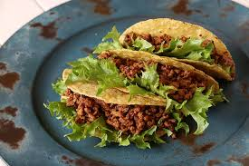

Home
White People Taco Night Tacos

Welcome to your new favorite Midwestern Caucasian Taco Recipe
Ingredients that you will need:
- 1 lb. Lean Ground Beef
- 1 packet of Taco Seasoning
- 1 Yellow Onion Diced
- Taco Shells
- Lettuce Shredded
- extra toppings
Instructions:
- Brown Ground Beef in pan on Medium-High Heat and Drain. Return to pan.
- Add Taco Seasoning and 1 cup of water to pan of browned ground beef. Bring to boil, simmer for 5 minutes.
- Portion taco meat with diced onion and shredded lettuce into taco shells with additional toppings.
- Listen to Willie Nelson and enjoy.